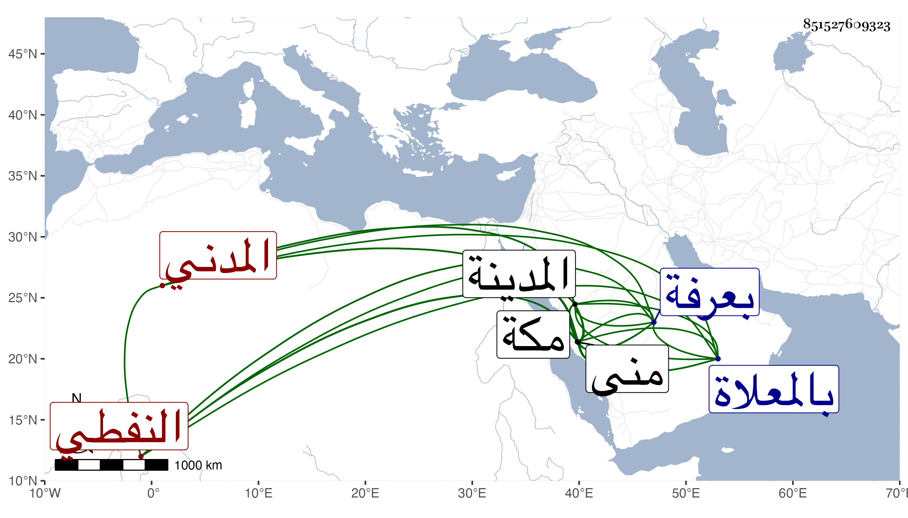

0902Sakhawi.DawLamic.ITO20230111-ara1.EIS1600.851527609323
Biography ID: 851527609323
394
أحمد بن محمد بن عبد الله الشهاب النفطي المدني . كان أمينا على حواصل الحرم النبوي وخدام الحرم وله ملاءة وأولاده بالمدينة تردد منها إلى مكة للحج مرارا في سنة عشر وثمانمائة في أثناء السنة وأقام بها إلى أن خرج إلى الحج ثم توفي بمنى بعد وقوفه بعرفة في أيام التشريق منها ودفن بالمعلاة وقد بلغ الستين ظنا ، وهو ممن سمع بالمدينة من قاضيها البدر بن الخشاب . قاله الفاسي في مكة .
